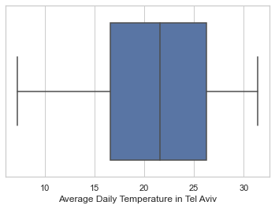
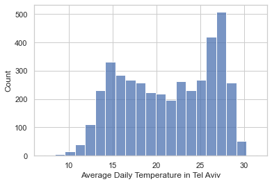
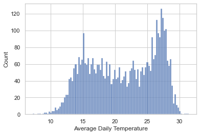
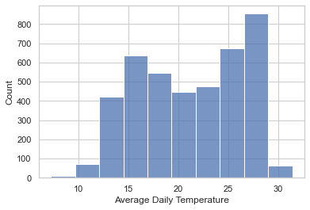
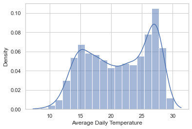
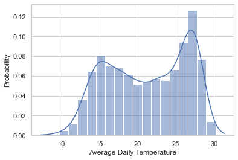
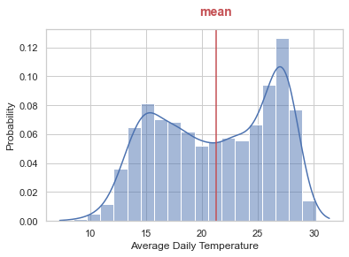

2 Tutorial 2
2.1 Topics
- Univariate data
- Summary statistics
- Quantiles
- Histograms
- Bar charts
- Encoding categorical varaibles
2.2 Important Python Packages
- Pandas
- Seaborn
- Matplotlib
2.2.1 Today’s datasets
- City Temperatures – Daily temperature for different international cities
| Country | City | Month | Day | Year | AvgTemperature | |
|---|---|---|---|---|---|---|
| 0 | Malawi | Lilongwe | 1 | 1 | 1995 | 69.5 |
| 1 | Malawi | Lilongwe | 1 | 2 | 1995 | 69.5 |
| 2 | Malawi | Lilongwe | 1 | 3 | 1995 | 67.5 |
| 3 | Malawi | Lilongwe | 1 | 4 | 1995 | 68.5 |
| 4 | Malawi | Lilongwe | 1 | 5 | 1995 | 66.7 |
array(['Lilongwe', 'Capetown', 'Tel Aviv', 'Amman', 'Beirut', 'Rochester'],
dtype=object)# isolate data from a single city (e.g., Tel Aviv)
city = 'Tel Aviv'
TA_temp = temp_df[temp_df.City == city]
TA_temp| Country | City | Month | Day | Year | AvgTemperature | |
|---|---|---|---|---|---|---|
| 14959 | Israel | Tel Aviv | 1 | 1 | 1995 | 57.3 |
| 14960 | Israel | Tel Aviv | 1 | 2 | 1995 | 56.1 |
| 14961 | Israel | Tel Aviv | 1 | 3 | 1995 | 55.9 |
| 14962 | Israel | Tel Aviv | 1 | 4 | 1995 | 56.9 |
| 14963 | Israel | Tel Aviv | 1 | 5 | 1995 | 56.6 |
| ... | ... | ... | ... | ... | ... | ... |
| 19595 | Israel | Tel Aviv | 9 | 11 | 2007 | 79.5 |
| 19596 | Israel | Tel Aviv | 9 | 12 | 2007 | 79.7 |
| 19597 | Israel | Tel Aviv | 9 | 13 | 2007 | 79.7 |
| 19598 | Israel | Tel Aviv | 9 | 14 | 2007 | 79.6 |
| 19599 | Israel | Tel Aviv | 9 | 15 | 2007 | 80.0 |
4641 rows × 6 columns
count 4641.000000
mean 54.020448
std 50.624184
min -99.000000
25% 59.400000
50% 68.700000
75% 78.600000
max 88.500000
Name: AvgTemperature, dtype: float64In line of code above, TA_temp[TA_temp['AvgTemperature']<(-50)] creates a boolean mask which is True for all rows in the TA_temp DataFrame where the value in the 'AvgTemperature' column is less than -50. The .drop() method is then called on the TA_temp DataFrame with this boolean mask passed as an argument to remove all rows where the condition is True. The .index at the end returns the index labels of the rows that were removed from the DataFrame. This allows you to keep track of which rows were dropped and potentially investigate why they were removed. In summary, .index is returning the index labels of the rows that satisfy the condition of TA_temp['AvgTemperature']<(-50) and are being removed from the TA_temp DataFrame by the .drop() method.
count 4196.000000
mean 21.249325
std 5.193370
min 7.277778
25% 16.555556
50% 21.611111
75% 26.277778
max 31.388889
Name: AvgTemp_C, dtype: float64# get the mean for the city you chose
mean_temp = TA_temp.AvgTemp_C.mean()
print(f"The mean temperature in {city} is: {mean_temp:.2f} degrees Celcius")The mean temperature in Tel Aviv is: 21.25 degrees Celcius# get the median temperature for the city you chose
median_temp = TA_temp.AvgTemp_C.median()
print(f"The median temperature in {city} is: {median_temp:.2f} degrees Celcius")The median temperature in Tel Aviv is: 21.61 degrees Celcius# get the 10th percentile for the city you chose
percentile_10 = TA_temp.AvgTemp_C.quantile(.1)
print(f"The tenth percentile in {city} is: {percentile_10:.2f} degrees Celcius")The tenth percentile in Tel Aviv is: 14.17 degrees Celcius# get the 90th percentile for the city you chose
percentile_90 = TA_temp.AvgTemp_C.quantile(.9)
print(f"The ninetieth percentile in {city} is: {percentile_90:.2f} degrees Celcius")The ninetieth percentile in Tel Aviv is: 27.67 degrees Celcius# make a box plot of temperature for the city you chose
ax = sns.boxplot(x=TA_temp.AvgTemp_C)
ax.set(xlabel=f'Average Daily Temperature in {city}')
2.2.2 Try out
- plot the Average Daily Temperature of the year 2000 for all cities
- plot the Average Daily Temperature of January 1st for all cities in all years
# make a histogram of the data for the city you chose
ax = sns.histplot(x=TA_temp.AvgTemp_C)
ax.set(xlabel=f'Average Daily Temperature in {city}')
# play around with the bin size for the histogram -- try more bins
ax = sns.histplot(x=TA_temp.AvgTemp_C, bins=100)
ax.set(xlabel='Average Daily Temperature')
# now fewer bins
ax = sns.histplot(x=TA_temp.AvgTemp_C, bins=10)
ax.set(xlabel='Average Daily Temperature')
# add kernel density estimator
ax = sns.histplot(x=TA_temp.AvgTemp_C, bins=20, kde = True)
ax.set(xlabel='Average Daily Temperature')# how can we normalize the histogram data?
ax = sns.histplot(x=TA_temp.AvgTemp_C, bins=20, kde = True, stat = "density")
ax.set(xlabel='Average Daily Temperature')
# what's the difference between the "density" stat and "probablity" stat --- https://seaborn.pydata.org/generated/seaborn.histplot.html
ax = sns.histplot(x=TA_temp.AvgTemp_C, bins=20, kde = True, stat = "probability")
ax.set(xlabel='Average Daily Temperature')
# add the mean to the plot
ax = sns.histplot(x=TA_temp.AvgTemp_C, bins=20, kde = True, stat = "probability")
ax.set(xlabel='Average Daily Temperature')
ax.axvline(mean_temp, label='mean', color='r')
ax.text(mean_temp,0.14, 'mean', va='bottom', ha='center', fontsize=14, weight='bold', color='r') Text(21.249324753733745, 0.14, 'mean')
2.2.3 Try out
- add the mode
- add the median
2.2.4 Encoding categorical variables
Sometimes, for reasons that will be clear on the HW, we’ll want to encode our categorical variables so that they are numbers instead.
There are many ways that we can achive this.
Here will learn one, for more examples see: https://pbpython.com/categorical-encoding.html
array(['Lilongwe', 'Capetown', 'Tel Aviv', 'Amman', 'Beirut', 'Rochester'],
dtype=object)Country object
City object
Month int64
Day int64
Year int64
AvgTemperature float64
AvgTemp_C float64
dtype: object